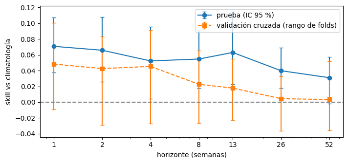
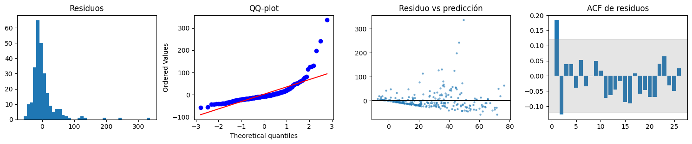
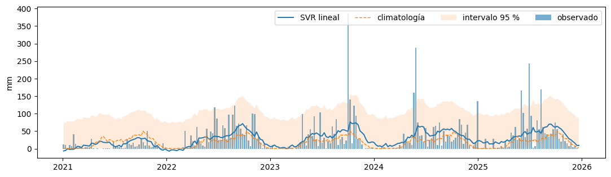
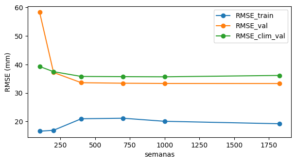

3. Modelo base#
Objetivo: lluvia acumulada en la semana \(h\) posterior a la emisión, \(y_h(t)\), en mm (\(10\,y_h\) m³/ha). Se emite un pronóstico por semana (los lunes).
Modelos comparados para cada horizonte:
DummyRegressor(media de entrenamiento): línea base trivial exigida por la guía.Climatología: media de entrenamiento para la misma semana del año (referencia exigente).
Ingenuo estacional: la lluvia de la misma ventana un año antes.
SVR lineal en
Pipeline(imputación → escalado →LinearSVR). Por validación cruzada temporal se eligen \(C\), la pérdida (cuadrática o \(\varepsilon\)-insensible) y si el objetivo se transforma con log1p.
Partición: con un solo sitio (plan B), cronológica: entrenamiento 1981–2020 con purga y prueba 2021–2025. Con la grilla regional, entrenamiento en los demás sitios y prueba en la finca (sitio no visto). La validación cruzada es de ventana creciente con gap = 7h + latencia días.
import sys, warnings
from pathlib import Path
sys.path.insert(0, str(Path.cwd().parent))
warnings.filterwarnings("ignore")
import numpy as np
import pandas as pd
import matplotlib.pyplot as plt
from src import config as cfg
np.random.seed(cfg.SEED)
plt.rcParams["figure.dpi"] = 110
from scipy import stats
from sklearn.metrics import mean_squared_error
from src import modelado as md, espacial as esp
df = pd.read_csv(cfg.DATA_PROCESSED / cfg.ARCHIVO_DATOS, parse_dates=["fecha"])
UN_SITIO = df["punto"].nunique() == 1
particion = md.particion_cronologica if UN_SITIO else md.particion_sitio_futuro
print("Esquema:", "cronológico (un sitio)" if UN_SITIO else "sitio no visto y años futuros")
Esquema: cronológico (un sitio)
3.1 Evaluación por horizonte#
filas, cvs, periodos, AJ = [], [], [], {}
for h in cfg.HORIZONTES_SEMANAS:
tabla = md.tabla_modelado(df, h)
cols = md.columnas_predictoras(tabla)
tr, te = particion(tabla, h)
tr = tr.sort_values(["fecha", "punto"]).reset_index(drop=True)
te = te.sort_values(["fecha", "punto"]).reset_index(drop=True)
sp = list(md.cv_temporal(tr.fecha, gap_dias=cfg.DIAS_POR_SEMANA * h + cfg.LATENCIA_DIAS))
modelo, mejor, rmse_cv, grilla = md.ajustar_svr(tr, cols, sp)
# Habilidad en validación cruzada con la configuración elegida
es, ec = [], []
for a, b in sp:
m = md.pipeline_svr(C=mejor["C"], log_objetivo=bool(mejor["log1p"]), loss=mejor["loss"]).fit(tr.loc[a, cols], tr.loc[a, "y"])
es.append(np.sqrt(mean_squared_error(tr.loc[b, "y"], m.predict(tr.loc[b, cols]))))
ec.append(np.sqrt(mean_squared_error(tr.loc[b, "y"], md.climatologia(tr.loc[a], h=h)(tr.loc[b]))))
ss = 1 - np.array(es) / np.array(ec)
# Intervalos conformales con los residuos del último fold
a, b = sp[-1]
mc = md.pipeline_svr(C=mejor["C"], log_objetivo=bool(mejor["log1p"]), loss=mejor["loss"]).fit(tr.loc[a, cols], tr.loc[a, "y"])
cal = md.cuantiles_conformales(tr.loc[b, "y"], mc.predict(tr.loc[b, cols]), niveles=(0.025, 0.05, 0.5, 0.95, 0.975))
preds = {"Dummy (media)": md.pipeline_dummy().fit(tr[cols], tr.y).predict(te[cols]),
"Climatología": md.climatologia(tr, h=h)(te),
"Ingenuo estacional": te.base_ingenuo_estacional.values,
"SVR lineal": modelo.predict(te[cols])}
ref = preds["Climatología"]
bloque = max(8, h + 4) * te.punto.nunique()
for nombre, yhat in preds.items():
ok = ~np.isnan(yhat)
m = md.metricas(te.y[ok], yhat[ok])
ci = md.bootstrap_bloques(te.y.values[ok], yhat[ok], ref[ok], largo_bloque=bloque, n_boot=1000)
filas.append({"h": h, "modelo": nombre, **m, "RMSE_inf": ci.loc["RMSE", "inf"], "RMSE_sup": ci.loc["RMSE", "sup"],
"SS": 1 - m["RMSE"] / md.metricas(te.y[ok], ref[ok])["RMSE"],
"SS_inf": ci.loc["SS_clim", "inf"], "SS_sup": ci.loc["SS_clim", "sup"], "n_test": int(ok.sum())})
q = md.aplicar_intervalo(preds["SVR lineal"], cal)
cvs.append({"h": h, **mejor, "SS_cv_media": ss.mean(), "SS_cv_min": ss.min(), "SS_cv_max": ss.max(),
"folds_positivos": int((ss > 0).sum()),
"cobertura_95": float(np.mean((te.y >= q[0.025]) & (te.y <= q[0.975]))),
"cobertura_P5": float(np.mean(te.y >= q[0.05]))})
AJ[h] = dict(modelo=modelo, cols=cols, cal=cal, tr=tr, te=te.assign(yhat=preds["SVR lineal"], clim=ref), mejor=mejor)
print(f"h = {h:>2}: {mejor}")
res = pd.DataFrame(filas); cv = pd.DataFrame(cvs)
res.to_csv(cfg.DATA_PROCESSED / "resultados_horizontes.csv", index=False)
res.round(3)
h = 1: {'log1p': False, 'loss': 'squared_epsilon_insensitive', 'C': 0.01, 'RMSE_cv': 22.53578095492299}
h = 2: {'log1p': False, 'loss': 'squared_epsilon_insensitive', 'C': 0.01, 'RMSE_cv': 22.689712686617877}
h = 4: {'log1p': False, 'loss': 'squared_epsilon_insensitive', 'C': 0.01, 'RMSE_cv': 22.546784231422095}
h = 8: {'log1p': False, 'loss': 'squared_epsilon_insensitive', 'C': 0.1, 'RMSE_cv': 23.130577801250396}
h = 13: {'log1p': False, 'loss': 'squared_epsilon_insensitive', 'C': 0.1, 'RMSE_cv': 23.276775045972066}
h = 26: {'log1p': False, 'loss': 'squared_epsilon_insensitive', 'C': 0.1, 'RMSE_cv': 23.799312469362267}
h = 52: {'log1p': False, 'loss': 'squared_epsilon_insensitive', 'C': 0.1, 'RMSE_cv': 24.237550125894067}
| h | modelo | RMSE | MAE | WAPE | MAPE_y>0 | R2 | RMSE_inf | RMSE_sup | SS | SS_inf | SS_sup | n_test | |
|---|---|---|---|---|---|---|---|---|---|---|---|---|---|
| 0 | 1 | Dummy (media) | 46.46 | 26.3 | 0.884 | 43.3 | -0.063 | 31.46 | 62.3 | -0.072 | -0.117 | -0.039 | 260 |
| 1 | 1 | Climatología | 43.35 | 21.73 | 0.731 | 15.94 | 0.075 | 28.8 | 58.07 | 0 | 0 | 0 | 260 |
| 2 | 1 | Ingenuo estacional | 55.29 | 29.53 | 0.993 | 13.72 | -0.505 | 39.95 | 70.7 | -0.275 | -0.731 | -0.059 | 260 |
| 3 | 1 | SVR lineal | 40.28 | 22.86 | 0.769 | 25.77 | 0.201 | 26.57 | 54.27 | 0.071 | 0.037 | 0.107 | 260 |
| 4 | 2 | Dummy (media) | 46.54 | 26.38 | 0.885 | 43.5 | -0.063 | 31.64 | 61.94 | -0.072 | -0.121 | -0.04 | 259 |
| 5 | 2 | Climatología | 43.43 | 21.77 | 0.73 | 16 | 0.075 | 28.88 | 57.83 | 0 | 0 | 0 | 259 |
| 6 | 2 | Ingenuo estacional | 55.39 | 29.59 | 0.993 | 13.77 | -0.506 | 39.66 | 70.91 | -0.275 | -0.725 | -0.058 | 259 |
| 7 | 2 | SVR lineal | 40.57 | 23.21 | 0.779 | 28.42 | 0.192 | 27.1 | 54.16 | 0.066 | 0.026 | 0.108 | 259 |
| 8 | 4 | Dummy (media) | 46.71 | 26.49 | 0.883 | 43.85 | -0.065 | 32.23 | 62.4 | -0.071 | -0.119 | -0.038 | 257 |
| 9 | 4 | Climatología | 43.59 | 21.89 | 0.73 | 16.12 | 0.073 | 29.31 | 58.26 | 0 | 0 | 0 | 257 |
| 10 | 4 | Ingenuo estacional | 55.6 | 29.78 | 0.993 | 13.88 | -0.509 | 39.55 | 71.38 | -0.275 | -0.73 | -0.07 | 257 |
| 11 | 4 | SVR lineal | 41.31 | 23.51 | 0.784 | 26.68 | 0.167 | 28.09 | 55.28 | 0.052 | 0.004 | 0.096 | 257 |
| 12 | 8 | Dummy (media) | 47.04 | 26.73 | 0.886 | 44.65 | -0.065 | 32.05 | 63.2 | -0.073 | -0.115 | -0.039 | 253 |
| 13 | 8 | Climatología | 43.85 | 21.95 | 0.728 | 16.36 | 0.074 | 30.14 | 59.52 | 0 | 0 | 0 | 253 |
| 14 | 8 | Ingenuo estacional | 55.97 | 29.96 | 0.993 | 14.1 | -0.508 | 41.17 | 72.66 | -0.276 | -0.686 | -0.073 | 253 |
| 15 | 8 | SVR lineal | 41.45 | 23.53 | 0.78 | 29.38 | 0.173 | 28.86 | 56.45 | 0.055 | 0.018 | 0.091 | 253 |
| 16 | 13 | Dummy (media) | 47.44 | 26.96 | 0.877 | 44.88 | -0.07 | 31.84 | 63.72 | -0.071 | -0.116 | -0.036 | 248 |
| 17 | 13 | Climatología | 44.29 | 22.35 | 0.727 | 16.63 | 0.067 | 29.66 | 59.49 | 0 | 0 | 0 | 248 |
| 18 | 13 | Ingenuo estacional | 56.52 | 30.51 | 0.993 | 14.38 | -0.519 | 41.64 | 72.33 | -0.276 | -0.663 | -0.088 | 248 |
| 19 | 13 | SVR lineal | 41.49 | 23.6 | 0.768 | 32.4 | 0.181 | 28.27 | 55.3 | 0.063 | 0.023 | 0.114 | 248 |
| 20 | 26 | Dummy (media) | 48.59 | 27.48 | 0.852 | 39.1 | -0.088 | 36.08 | 63.56 | -0.074 | -0.117 | -0.045 | 235 |
| 21 | 26 | Climatología | 45.25 | 22.52 | 0.698 | 7.24 | 0.057 | 32.83 | 59.16 | 0 | 0 | 0 | 235 |
| 22 | 26 | Ingenuo estacional | 58 | 31.73 | 0.983 | 11.67 | -0.55 | 45.39 | 73.28 | -0.282 | -0.57 | -0.117 | 235 |
| 23 | 26 | SVR lineal | 43.45 | 24.23 | 0.751 | 19.59 | 0.13 | 31.71 | 56.77 | 0.04 | 0.018 | 0.069 | 235 |
| 24 | 52 | Dummy (media) | 51.4 | 29.54 | 0.848 | 38.36 | -0.117 | 42.06 | 64.66 | -0.081 | -0.123 | -0.049 | 209 |
| 25 | 52 | Climatología | 47.54 | 23.16 | 0.665 | 4.846 | 0.045 | 38.12 | 59.87 | 0 | 0 | 0 | 209 |
| 26 | 52 | Ingenuo estacional | 61.08 | 33.92 | 0.973 | 12.93 | -0.577 | 50.03 | 74.05 | -0.285 | -0.577 | -0.103 | 209 |
| 27 | 52 | SVR lineal | 46.07 | 24.37 | 0.699 | 11.92 | 0.103 | 37.27 | 58.58 | 0.031 | -0.002 | 0.057 | 209 |
cv.round(3)
| h | log1p | loss | C | RMSE_cv | SS_cv_media | SS_cv_min | SS_cv_max | folds_positivos | cobertura_95 | cobertura_P5 | |
|---|---|---|---|---|---|---|---|---|---|---|---|
| 0 | 1 | False | squared_epsilon_insensitive | 0.01 | 22.54 | 0.048 | -0.01 | 0.101 | 4 | 0.923 | 0.923 |
| 1 | 2 | False | squared_epsilon_insensitive | 0.01 | 22.69 | 0.043 | -0.029 | 0.083 | 4 | 0.9 | 0.892 |
| 2 | 4 | False | squared_epsilon_insensitive | 0.01 | 22.55 | 0.045 | -0.027 | 0.091 | 4 | 0.887 | 0.887 |
| 3 | 8 | False | squared_epsilon_insensitive | 0.1 | 23.13 | 0.023 | -0.027 | 0.065 | 3 | 0.897 | 0.877 |
| 4 | 13 | False | squared_epsilon_insensitive | 0.1 | 23.28 | 0.018 | -0.023 | 0.055 | 3 | 0.903 | 0.891 |
| 5 | 26 | False | squared_epsilon_insensitive | 0.1 | 23.8 | 0.004 | -0.037 | 0.033 | 3 | 0.894 | 0.894 |
| 6 | 52 | False | squared_epsilon_insensitive | 0.1 | 24.24 | 0.003 | -0.036 | 0.052 | 2 | 0.933 | 0.957 |
Interpretación. El SVR lineal supera a la línea base trivial (Dummy) en todos los horizontes y también a la climatología, que es la referencia exigente. La validación eligió la pérdida cuadrática sin transformar el objetivo: la pérdida ε-insensible y la transformación log producen predicciones cercanas a la mediana, que en una variable tan asimétrica subestiman las semanas lluviosas; la pérdida cuadrática estima la media condicional, coherente con el RMSE. El MAE del SVR es levemente mayor que el de la climatología precisamente porque el modelo optimiza el error cuadrático. MAPE da valores de miles por ciento por las semanas con lluvia casi nula y no es interpretable; se usa WAPE. Nota crítica de la guía: ningún R² se acerca al 80 % y la mejora sobre la climatología es modesta, lo que descarta un desempeño inflado por fuga y es coherente con la baja predictibilidad de la lluvia semanal.
3.2 Horizonte confiable n#
svr = res[res.modelo == "SVR lineal"].reset_index(drop=True)
N_PRUEBA = 0
for _, f in svr.iterrows():
if f.SS_inf > 0: N_PRUEBA = int(f.h)
else: break
N_CV = 0
for _, f in cv.iterrows():
if f.folds_positivos >= 4: N_CV = int(f.h)
else: break
N_CONFIABLE = min(N_PRUEBA, N_CV)
fig, ax = plt.subplots(figsize=(8, 3.5))
ax.errorbar(svr.h, svr.SS, yerr=[svr.SS - svr.SS_inf, svr.SS_sup - svr.SS], fmt="o-", capsize=3, label="prueba (IC 95 %)")
ax.errorbar(cv.h, cv.SS_cv_media, yerr=[cv.SS_cv_media - cv.SS_cv_min, cv.SS_cv_max - cv.SS_cv_media], fmt="s--", capsize=3, label="validación cruzada (rango de folds)")
ax.axhline(0, c="grey", ls="--"); ax.set_xscale("log"); ax.set_xticks(svr.h); ax.set_xticklabels(svr.h)
ax.set_xlabel("horizonte (semanas)"); ax.set_ylabel("skill vs climatología"); ax.legend(); plt.show()
print(f"n según prueba: {N_PRUEBA} | n según validación (≥ 4 de 5 folds positivos): {N_CV} | n adoptado (conservador): {N_CONFIABLE}")

n según prueba: 26 | n según validación (≥ 4 de 5 folds positivos): 4 | n adoptado (conservador): 4
Interpretación. La mejora sobre la climatología es de alrededor del 7 % a una semana en prueba y del 5 % en validación cruzada, y decrece con el horizonte. El criterio de prueba sostiene habilidad hasta 26 semanas, pero el de validación solo hasta 4 semanas; se adopta el conservador, n = 4 semanas. Más allá, la planeación de la siembra debe apoyarse en escenarios climatológicos y, en el segundo entregable, en el pronóstico estacional con ENSO.
3.3 Cambio de régimen en el periodo de prueba#
filas = []
for h, aj in AJ.items():
te = aj["te"]
for nombre, g in [("2021", te[te.fecha.dt.year == 2021]), ("2022–2025", te[te.fecha.dt.year >= 2022])]:
rs, rc = np.sqrt(((g.y - g.yhat) ** 2).mean()), np.sqrt(((g.y - g.clim) ** 2).mean())
filas.append({"h": h, "periodo": nombre, "RMSE_svr": rs, "RMSE_clim": rc, "SS": 1 - rs / rc, "y_media": g.y.mean()})
print("Lluvia media semanal (objetivo) en entrenamiento y prueba:", round(AJ[1]["tr"].y.mean(), 1), round(AJ[1]["te"].y.mean(), 1))
pd.DataFrame(filas).round(3)
Lluvia media semanal (objetivo) en entrenamiento y prueba: 18.5 29.7
| h | periodo | RMSE_svr | RMSE_clim | SS | y_media | |
|---|---|---|---|---|---|---|
| 0 | 1 | 2021 | 14.37 | 19.13 | 0.249 | 8.621 |
| 1 | 1 | 2022–2025 | 44.46 | 47.52 | 0.064 | 35.02 |
| 2 | 2 | 2021 | 14.24 | 19.06 | 0.253 | 8.382 |
| 3 | 2 | 2022–2025 | 44.81 | 47.63 | 0.059 | 35.19 |
| 4 | 4 | 2021 | 14.52 | 19.01 | 0.236 | 8.174 |
| 5 | 4 | 2022–2025 | 45.68 | 47.86 | 0.046 | 35.52 |
| 6 | 8 | 2021 | 16.03 | 17.98 | 0.108 | 6.772 |
| 7 | 8 | 2022–2025 | 45.78 | 48.34 | 0.053 | 36.23 |
| 8 | 13 | 2021 | 20.06 | 19.2 | -0.045 | 7.621 |
| 9 | 13 | 2022–2025 | 45.52 | 48.82 | 0.068 | 36.85 |
| 10 | 26 | 2021 | 23.34 | 23.4 | 0.003 | 16.01 |
| 11 | 26 | 2022–2025 | 47.63 | 49.74 | 0.042 | 36.9 |
| 12 | 52 | 2021 | 34.42 | 33.73 | -0.02 | 35.42 |
| 13 | 52 | 2022–2025 | 49.32 | 51.3 | 0.039 | 34.66 |
Interpretación. El periodo de prueba no es comparable con el entrenamiento: la lluvia semanal media pasa de 18,5 mm a 29,7 mm, y 2022–2025 registra entre 1.700 y 2.000 mm por año. En 2021, un año más cercano a lo habitual, el SVR mejora a la climatología en torno al 25 % a una semana; en 2022–2025 la mejora baja a cerca del 6 %. El cambio puede ser climático (La Niña 2021–2023) o un cambio en la fuente de precipitación de POWER; debe verificarse con estaciones del IDEAM. Los errores absolutos de prueba (RMSE cercano a 40 mm) están dominados por ese régimen y no representan el error esperado en años normales (unos 23 mm en validación).
3.4 Diagnóstico para h = 1#
aj = AJ[1]; te = aj["te"].copy(); te["resid"] = te.y - te.yhat
X = np.c_[np.ones(len(te)), te.yhat]; e2 = te.resid ** 2
b_ = np.linalg.lstsq(X, e2, rcond=None)[0]; r2 = 1 - ((e2 - X @ b_) ** 2).sum() / ((e2 - e2.mean()) ** 2).sum()
print(f"Breusch-Pagan: LM = {len(te) * r2:.2f}, p = {stats.chi2.sf(len(te) * r2, 1):.4f}")
print(f"Shapiro-Wilk p = {stats.shapiro(te.resid).pvalue:.2e} | asimetría de residuos = {stats.skew(te.resid):.2f}")
x = te.resid.values - te.resid.mean(); ac = np.array([(x[:-k] @ x[k:]) / (x @ x) for k in range(1, 27)]); b = 1.96 / np.sqrt(len(x))
fig, axs = plt.subplots(1, 4, figsize=(15, 3.2))
axs[0].hist(te.resid, bins=40); axs[0].set_title("Residuos")
stats.probplot(te.resid, dist="norm", plot=axs[1]); axs[1].set_title("QQ-plot")
axs[2].scatter(te.yhat, te.resid, s=5, alpha=.5); axs[2].axhline(0, c="k"); axs[2].set_title("Residuo vs predicción")
axs[3].bar(range(1, 27), ac); axs[3].axhspan(-b, b, alpha=.2, color="grey"); axs[3].set_title("ACF de residuos")
plt.tight_layout(); plt.show()
Breusch-Pagan: LM = 5.58, p = 0.0182
Shapiro-Wilk p = 2.78e-22 | asimetría de residuos = 3.99

q = md.aplicar_intervalo(te.yhat.values, aj["cal"])
fig, ax = plt.subplots(figsize=(13, 3.5))
ax.bar(te.fecha, te.y, width=5, alpha=.6, label="observado"); ax.plot(te.fecha, te.yhat, lw=1.4, label="SVR lineal")
ax.plot(te.fecha, te.clim, ls="--", lw=1, label="climatología")
ax.fill_between(te.fecha, q[0.025], q[0.975], alpha=.15, label="intervalo 95 %"); ax.legend(ncol=4); ax.set_ylabel("mm"); plt.show()

Curva de aprendizaje (validación fija 2016–2020)#
tr = aj["tr"].sort_values("fecha"); cols = aj["cols"]; mj = aj["mejor"]
val = tr[tr.fecha >= "2016-01-01"]; pool = tr[tr.fecha < pd.Timestamp("2016-01-01") - pd.Timedelta(days=10)]
lc = []
for N in [100, 200, 400, 700, 1000, len(pool)]:
A = pool.tail(N)
m = md.pipeline_svr(C=mj["C"], log_objetivo=bool(mj["log1p"]), loss=mj["loss"]).fit(A[cols], A.y)
lc.append([N, np.sqrt(mean_squared_error(A.y, m.predict(A[cols]))), np.sqrt(mean_squared_error(val.y, m.predict(val[cols]))),
np.sqrt(mean_squared_error(val.y, md.climatologia(A, h=1)(val)))])
lc = pd.DataFrame(lc, columns=["semanas", "RMSE_train", "RMSE_val", "RMSE_clim_val"])
lc.plot(x="semanas", marker="o", figsize=(7, 3.5)); plt.ylabel("RMSE (mm)"); plt.show(); lc.round(2)

| semanas | RMSE_train | RMSE_val | RMSE_clim_val | |
|---|---|---|---|---|
| 0 | 100 | 16.59 | 58.23 | 39.27 |
| 1 | 200 | 16.92 | 37.17 | 37.45 |
| 2 | 400 | 20.96 | 33.59 | 35.78 |
| 3 | 700 | 21.14 | 33.41 | 35.7 |
| 4 | 1000 | 20.06 | 33.32 | 35.66 |
| 5 | 1825 | 19.21 | 33.3 | 36.13 |
Coeficientes (predictoras estandarizadas)#
mod = aj["modelo"]; svr_ = mod.named_steps["svr"] if hasattr(mod, "named_steps") else mod.regressor_.named_steps["svr"]
pd.Series(svr_.coef_, index=cols).sort_values(key=np.abs, ascending=False).round(3).head(15)
| 0 | |
|---|---|
| cos_doy | -5.456 |
| cos2_doy | -5.15 |
| GWETTOP_media_30d | 4.384 |
| P_suma_30d | 3.662 |
| sin3_doy | 3.168 |
| GWETROOT_media_30d | 3.062 |
| T2M_media_7d | 3.021 |
| ALLSKY_SFC_SW_DWN_media_7d | -2.68 |
| P_suma_90d | 2.631 |
| T2M_MAX_media_7d | -2.492 |
| WS2M_media_7d | -1.644 |
| ALLSKY_SFC_SW_DWN_media_30d | 1.619 |
| P_suma_365d | 1.552 |
| GWETROOT_media_7d | -1.217 |
| T2M_media_30d | 1.215 |
Interpretación. Los residuos no son normales (Shapiro-Wilk p < 0,001; asimetría ≈ 4): el modelo no anticipa los aguaceros extremos. Hay heterocedasticidad (Breusch-Pagan p ≈ 0,02): el error crece con la lluvia pronosticada. La media de los residuos es positiva, es decir, el modelo subestima en el periodo lluvioso de prueba, y queda autocorrelación a un rezago, señal de memoria no capturada. La cobertura del intervalo del 95 % está entre 89 % y 93 %, algo menor que la nominal, coherente con el cambio de régimen. En la curva de aprendizaje el error de validación se estabiliza desde unas 400 semanas, por debajo de la climatología, y la brecha con entrenamiento es estable: no hay sobreajuste, y agregar años del mismo sitio no mejoraría mucho; eso respalda el diseño regional. Los coeficientes de mayor magnitud son los armónicos del ciclo anual y la humedad del suelo y la lluvia de los últimos 30 días (más agua reciente anticipa más lluvia); más radiación reciente (cielo despejado) reduce la lluvia esperada. Estos hallazgos motivan, para el siguiente entregable, modelos no lineales con pérdida Poisson o Tweedie e intervalos por cuantiles.
3.5 Esquema secundario (solo con la grilla regional)#
if UN_SITIO:
print("No aplica con un solo sitio.")
else:
h = 1; tabla = md.tabla_modelado(df, h); cols = md.columnas_predictoras(tabla)
tr2, te2 = md.particion_cronologica(tabla, h); mj = AJ[1]["mejor"]
m2 = md.pipeline_svr(C=mj["C"], log_objetivo=bool(mj["log1p"]), loss=mj["loss"]).fit(tr2[cols], tr2.y)
te2 = te2.assign(resid=te2.y - m2.predict(te2[cols]))
coords = df.groupby("punto")[["lat", "lon"]].first()
W = esp.pesos_inverso_distancia(coords.lat, coords.lon)
print("I de Moran de los residuos medios por sitio:", esp.moran_i(te2.groupby("punto")["resid"].mean().loc[coords.index].values, W))
No aplica con un solo sitio.